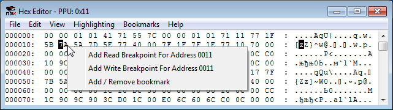

Содержание
Этот режим отображает память видеопроцессора. Размер окна $0000-$3FFF.
На адреса PPU можно ставить Read и Write брейкпоинты, кликнув правой кнопкой по адресу (или выделенному диапазону).

Так как чтение/запись байтов видеопамяти осуществляется через регистр $2006, все брейкпоинты будут срабатывать на командах, работающих с адресом $2006, когда код будет пытаться считать или записать байт по адресу, указанному в условии брейкпоинта.
Подробности о брейкпоинтах читай в описании окна Debugger.
По адресам $0000-$1FFF находятся байты CHR, из которых составляется изображение тайла. Тайлы можно посмотреть в окне PPU Viewer, которое открывается в эмуляторе FCEUX во вкладке Debug.
Каждая из двух таблиц Pattern table размером 4 KB (диапазоны $0000-$0FFF и $1000-$1FFF). Одна из них отвечает за тайлы, а другая за спрайты. Это контролируется регистром видеопроцессора $2000.
Если маппер позволяет переключать банки с тайлами, нельзя вручную изменять байты в этом диапазоне, если не знаешь что делаешь. Для редактирования этих байтов есть тайловые редакторы, например YY-CHR.
Изменив эти байты вручную, ты начнешь изменять изображение тайлов. Эти изменения занесутся напрямую в CHR ROM, и их нельзя будет отменить ни через Ctrl + Z, ни загрузкой сохранения. А если сохранить ROM во вкладке File, изменения окончательно сохранятся в файле. Восстановить можно будет лишь воспользовавшись предварительно сделанной копией файла, скопировав оттуда байты и вставив по нужному месту в подпорченном файле.
Если сильно накосячить в своем коде, может случиться такое, что он начнет записывать байты в видеопамять и перерисовывать тайлы.
Нельзя выловить попытку игры переключить банк CHR ROM с помощью Write брейкпоинта на адрес PPU $0000-$1FFF, поскольку технически переключение банка не является перезаписью некого диапазона адресов другими байтами. Нужно ставить Write брейкпоинт на регистр маппера, через который осуществляется переключение банка.
Nametable - таблица, в которой находятся данные фона, который ты видишь в игре на экране эмулятора. С помощью них рисуется уровень, по которому проходит персонаж.
Каждая из 4-х таблиц размером 1 KB. Первая таблица в диапазоне $2000-$23FF, вторая $2400-27FF, третья $2800-$2BFF, четвертая $2C00-$2FFF. Их можно посмотреть в окне Name Table Viewer, которое открывается в эмуляторе FCEUX во вкладке Debug.
В большинстве случаев есть 2 основных таблицы и 2 их зеркала. Тип зеркаливания контролируется регистром маппера, отвечающим за Mirroring, либо хедером. При Horizontal Mirroring зеркалом 1-й таблицы является 2-я, а при Vertical - 3-я.
Mirroring по большей части выбирается исходя из того, как именно будет скроллиться игровой экран.
Первые 960 байтов таблицы являются номерами тайлов, а последние 64 байта являются атрибутом заднего фона, в котором указывается палитра для размера 32x32 пикселя. Если взять в пример первую таблицу, то номера тайлов находятся в $2000-$23BF, а атрибуты в $23C0-$23FF.
У игр региона NTSC не отображаются верхние и нижние 8 пикселей экрана. Это можно временно изменить в Config -> Video -> Drawing area. Но лучше в итоге оставить как есть.
Изменяя байты в этих адресах, можно временно перерисовывать фон и изменять номер используемой палитры. Это поможет определить адрес, в котором находится нужный тайл, чтобы впоследствие поставить на него брейкпоинт. Также это помогает временно вручную сконструировать новый экран/логотип, работая с Nametable как с черновиком.
Пользуйся сохранениями, чтобы вернуть байты в Nametable как было, или чтобы сравнить несколько вариантов переделанного фона.
Палитра фона находится в $3F00-$3F0F, палитра спрайтов в $3F10-$3F1F. Все остальное это их зеркала. Цвета можно посмотреть в окне PPU Viewer (вкладка Debug).
Меняя байты палитры, на экране также будут меняться цвета. Изменяя байт в $3F00 или $3F10, ты изменишь палитру фона.
Иногда игра может сразу перезаписать цвета на свои, если постоянно записывает палитру в видеопамять. В таком случае они скорее всего находятся в RAM, достаточно воспользоваться поиском и пробить по нему несколько байтов, например из адресов $3F01-$3F04, а затем менять байты уже в RAM.